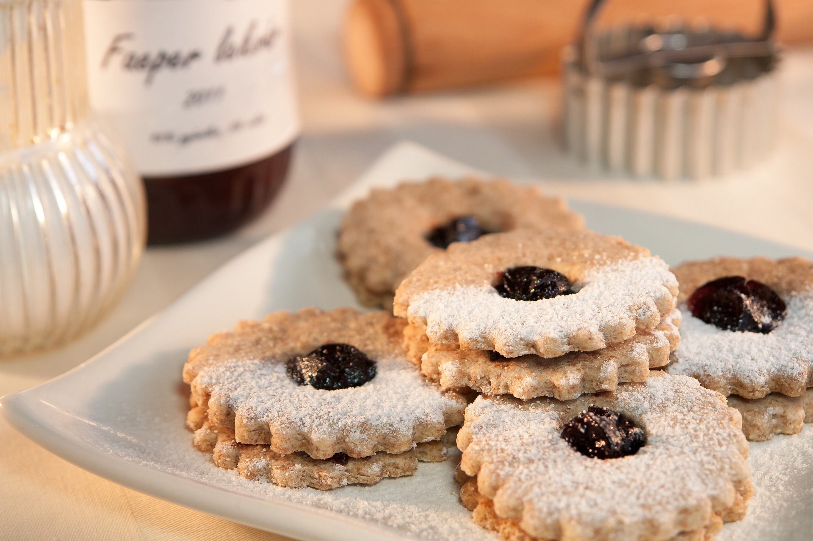

Linzer Cookies

Description
Linzer Eyes are probably one of the most famous and traditional Christmas biscuits in Austria.
Ingredients
- 110 g / 3/4 cup icing sugar
- 220 g / 1 cup butter
- 310 g / 2 1/3 cups flour
- 1 egg
- 1 tablespoon vanilla sugar
- Lemon peel
- Apricot or redcurrant jam
- Icing sugar for sprinkling
- Cut the cold butter into small pieces and quickly crumble with the flour. Add sugar, egg, vanilla sugar, and grated lemon peel and mix into a smooth dough. Allow to cool or at least rest for half an hour.
- Then roll out the dough about 3 mm thick and cut out the slices with a serrated cutter. Cut holes into half of the slices (use a special cutter or small biscuit cutter). Place the slices on the baking tray and bake in a preheated oven at 200°C / 392°F for about 10 minutes until golden brown.
- After baking, coat the bottoms with jam, place the tops, and sprinkle with icing sugar. Tip: Like all biscuits made from short pastry, Linzer Eyes require a storage time of approximately 14 days until they are tender. It is recommended to store them in sealed metal boxes.